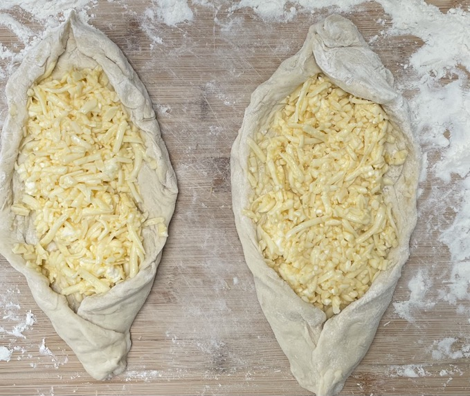
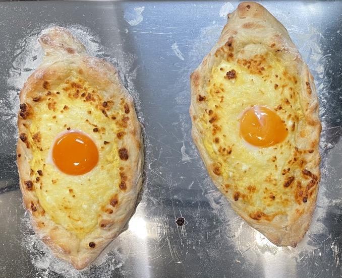
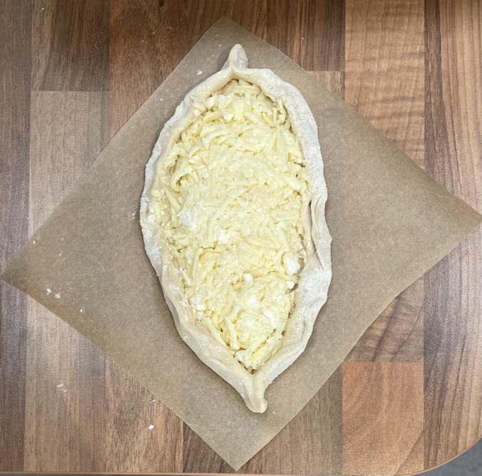
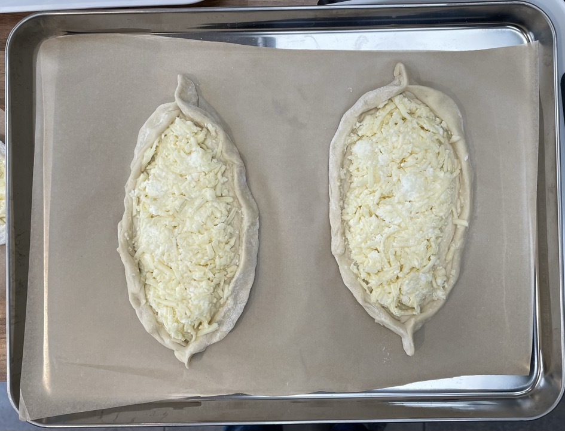

Khachapuri
Dough
- Mix in bowl and warm to 45°C
- Mix in
- 1 tbsp olive oil
- 1 tsp sugar
- 5g yeast
- Mix in
- 190g strong bread flour
- ½ tsp salt
- Add gradually to make wet dough
- Knead for 5 mins
- Leave to prove for 40 mins
Cheese
- Mix
- 200g mozzarella grated
- 100g feta crumbled
- 1 egg
Bread
- Divide dough into 4 on floured surface
- Roll each piece into 25x12cm oval
- Put same amount of cheese into centre of each piece with wide rim around edges
- Smooth top of each piece
- Fold edges of dough inward to make thick crust border
- Pinch ends to create boats
- Leave to prove for 15 mins
- Bake in oven at 220°C for 10-12 mins until crusts golden
- Remove from oven
- Make well in centre of each bread with egg and fill with 1 egg yolk
- Return to oven for 2½ mins to warm yolk but not set
Serving
- Chilli flakes / chilli sauce
- 4 portions
Notes
Pics



